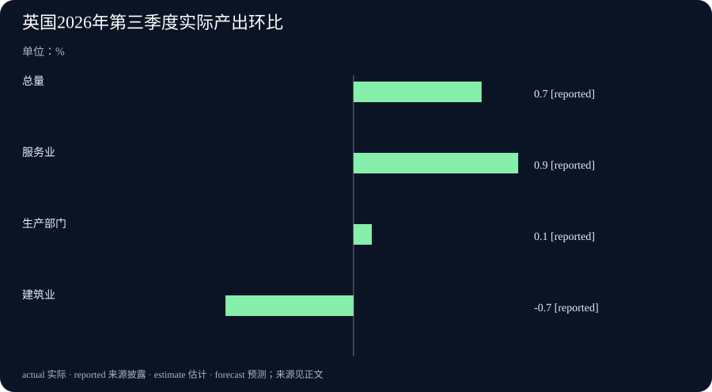

Daily Intelligence · 2026-11-13
信息边界 研究截止于北京时间 2026 年 11 月 13 日 07:04:43，优先窗口从 11 月 12 日 07:04:43 起。谷歌公告标注 11 月 12 日，小时未披露，原页时区未知。LiteLLM 正式版的公开软件包于 12 日 09:59:54 左右出现在 Python 软件包索引（PyPI），发布时间按该索引的协调世界时记录换算。西门子业绩于德国当地 12 日 07:00 发布，即北京时间 14:00。英国国内生产总值初值于英国当地 12 日 07:00 发布，即北京时间 15:00。
Today's Thesis
谷歌推出面向日常工作的 Gemini 4 Hydrogen，LiteLLM 收紧了应用向模型发送请求时能填写的身份字段。两项进展关系到同一套软件的不同环节。模型能接手哪些任务，要用完成质量、用时和费用来验收。应用能替谁调用模型，要看管理员设定的权限。西门子和英国的新数据则显示，总量增长之后，还要查增长来自哪些项目和行业。
Executive Summary
谷歌正式开放 Gemini 4 Hydrogen，开发者有免费额度可试用，付费接口按输入和输出用量分别计费。模型有四档推理设置，方便按任务难度调整。LiteLLM 1.109.1 把一项身份字段保护带到稳定版，依赖旧写法的应用需要检查请求。
西门子财年第四季度营收约 237 亿欧元，同比增 11%。德国轨道交通大单和智能基础设施业务推高季度订单。全年工业业务利润增加，集团净利润低于上年，上年包含一笔出售业务的收益。
英国国家统计局初步估算，第三季度经济产出较上季增长 0.7%，快于第二季度的 0.5%。服务业是主要拉动力，生产部门略增，建筑业产出下降。下次发布将纳入更多数据。
AI Daily
谷歌开放 Gemini 4 Hydrogen，增加推理档位
谷歌 11 月 12 日发布 Gemini 4 Hydrogen，把它用于日常编程和需要连续操作多步的任务。开发者可通过应用程序接口（API）接入，也就是让软件把任务发送给模型并取回结果。谷歌开发者更新列明有免费使用档，付费档每百万输入计费单元 1.50 美元，每百万输出计费单元 7.50 美元。计费单元是系统切分内容时用的单位，和汉字数并不一一对应。 谷歌发布原文 开发者更新
模型提供低、中、高和超高四档推理设置，默认高档。推理档位决定软件给模型多少空间在答复前分析问题。谷歌在发布中展示了从 Gemini 3.8 Flash 换用 Hydrogen 后，部分指定测试的用时和通过情况。团队若计划更新，应拿自己的重复任务核对时间、结果和实际用量。调用费还受模型输出多少内容、一次操作要往返多少次影响。 谷歌测试与设置说明
11 月 11 日的日报记录了 Gemini 4 Carbon 扩大付费开放。本次新增的是另一个面向常用任务的模型，以及免费使用档和可选的推理设置。谷歌还将 Hydrogen 设为 Gemini 托管助手服务中 Antigravity 助手的默认模型。这项默认设置有明确的产品范围，已有应用仍须核对自己配置的型号。 开发者发布记录
LiteLLM 稳定版明确限制应用传入的身份字段
LiteLLM 发布正式版 1.109.1。它可以充当模型网关，也就是接收应用请求并转发给不同模型服务的中间层。修复涉及模型和部分转发接口的请求内容。以前，调用方填写的某些身份字段可能和管理员设置的服务登录信息冲突。升级后，这些接口默认在入口拒绝此类字段，除非管理员明确启用相关方式。 LiteLLM 正式发布说明 公开软件包分发记录 维护者的稳定版变更记录
假设某个应用把客户编号放进请求中原本用于身份验证的字段，只是为了便于检索。按维护者说明，这类标签可放进专门的附加信息区。某些接口本来就需要自己的授权字段，维护者保留了这些用法。新的拒绝消息会告诉调用方涉及哪个字段。对于同时服务多个团队的系统，实际变化是接入方可填写的信息范围更明确。企业需要按自己已部署的版本和使用的接口验证影响。 LiteLLM 字段与接口例外
Business Daily
西门子订单创新高，轨道交通大单贡献明显
西门子公布截至 9 月 30 日的 2026 财年第四季度业绩和全年初步业绩。第四季度订单约 348 亿欧元，同比增 58%，营收约 237 亿欧元，同比增 11%。按公司排除汇率和收购、出售业务带来的统计范围变化后，订单增幅仍为 58%，营收增 10%。订单指公司当季接到的业务金额，其中有些项目要分期交付和确认收入。 西门子业绩公告
轨道交通业务季度订单约 107.36 亿欧元，上年同季约 25.22 亿欧元。其中有德国价值 24 亿欧元的高速列车及全面维护订单。另一个德国市郊列车和相关服务项目是联合交付，财报计入的是西门子轨道交通业务所占的 19 亿欧元。智能基础设施业务的订单约 86.65 亿欧元，同比增 40%。公司在配电和电气产品业务中提到数据中心客户的大合同。集团订单同时包含铁路、配电等业务，判断数据中心需求应查其对应的业务和客户项目。 西门子分业务财报
全年工业业务利润约 133 亿欧元，同比增 13%，集团净利润约 95 亿欧元，低于上年的约 104 亿欧元。上年净利润包含出售 Innomotics 业务约 21 亿欧元的收益。集团全年自由现金流约 121 亿欧元。自由现金流可以帮助读者了解经营带来的现金在扣除相关资本支出后剩下多少。看长期项目时，还要跟进交付进度和各期收款。 西门子全年业绩及财报口径
Macro Observation
英国第三季度初值增长 0.7%，服务和建筑走势不同
英国国家统计局（ONS）于 11 月 12 日发布第三季度国内生产总值（GDP）初值。GDP 衡量一段时间内国内生产的最终商品和服务的价值。剔除价格变动后，7 至 9 月的实际 GDP 较第二季度增长 0.7%，第二季度较第一季度增长 0.5%。第三季度比上年同季增长 1.9%。按人口平均计算的实际 GDP 较上一季度也增长 0.7%，同比增长 1.7%。人均数字描述的是平均产出，家庭到手收入要查收入统计。 英国国家统计局初值报告 正式发布时间
服务业产出较上季增 0.9%，其中主要面向企业的服务增 1.0%，主要面向消费者的服务增 0.5%。生产部门整体增 0.1%，制造业增 0.9%，采矿等分项下降。建筑业整体降 0.7%，其中新工程下降 1.6%，维修保养增长 0.5%。统计局把总量增长主要归于服务业。初值可能随新增资料调整。统计局列出的下一次发布日是 12 月 22 日。 英国国家统计局分行业数据
Signal Dashboard
| 主线 | 已有证据 | 接下来核对什么 |
|---|---|---|
| Gemini 4 Hydrogen | 接口已开放，设有免费档和四档推理设置 | 同一批任务的通过率、用时与用量 |
| LiteLLM 1.109.1 | 正式版默认拒绝若干与管理员设置冲突的字段 | 旧应用是否把标签放在这些字段，例外范围是否符合预期 |
| 西门子 | 第四财季订单创新高，铁路合同与电气设备均有贡献 | 具体项目的交付、付款与分业务收入 |
| 英国经济 | 三季度实际产出环比初估增 0.7%，服务业为主要贡献 | 12 月修订以及建筑分项能否回稳 |
Deep Insight
一项新能力上线后，哪些环节还需要证据
应用团队在模型更新之后，通常先关心任务能否做完。有些任务在第一次回答后就能验收，有些任务需要模型查询材料、等待另一套软件返回结果，再继续下一步。假设团队让模型整理十份供货文件并填一张表，验收时可以检查金额和交付日，还可以让查询有意遇到一个空结果，观察它是否如实记录并请人补材料。选用更高的推理档位是否值得，可以看错误和人工复核时间有没有下降，以及单次任务的实际费用增加了多少。这样可以把官方测试结果和自己的工作条件放在各自合适的位置。
多步任务也容易把两个层次混在一起。一层是模型收到什么内容，可以据此分析和作答。另一层是接入软件通过哪个账户或授权去访问外部系统。以部门文件为例，假设模型正在帮两个部门汇总各自的合同。两组任务都能生成格式正确的表格，但只有使用各自被授权的文件范围，答案才适合交给对应部门。LiteLLM 的修复处理的是请求填写方式和管理员设置的边界，部门文件权限还要由业务系统检查。模型和网关都更新时，可以分别试验回答质量和网关对不合规请求的拒绝，再测试正常请求能否走完整条流程。 谷歌开发者记录 LiteLLM 变更细节
西门子的财报展示了设备项目中时间跨度更长的环节。铁路合同包括车辆和维护，订单进入财报时可以看见金额。实际供货和后续维护往往分期发生。数据中心客户的电气设备项目也要经过制造、安装和验收。季度订单大幅增加，说明这一期拿到了更多业务。要判断未来利润和现金怎样变动，可以继续找各业务的交付进度、付款和成本资料。西门子同时公布铁路订单与数据中心客户合同，给读者留下了检查增长构成的线索。 西门子分业务财报
英国数据的行业分布给出了另一个反例。全国总体产出加快的一个季度，建筑行业仍在收缩。给本地施工企业做业务判断时，新工程和维修项目的区别可能比全国增速更有用。为企业提供服务的机构则可先看对应服务分项，再找本地或客户层面的订单。只要把统计对象、期间和后续可核实的证据写在一起，下一次报告出来时就能看清究竟是哪部分变了。 英国国家统计局行业初值
Tomorrow Watch
- 观察现有软件从上一代 Gemini 换到 Hydrogen 后，同一任务在默认高档和较低档位的费用及人工复核用时。
- 跟踪 LiteLLM 旧版调用方把标签移至附加信息区后的实际情况，并核对依赖特定授权字段的接口仍能完成正常请求。
- 西门子后续披露若拆分铁路、配电和数据中心相关订单，可核对当季大单的交付进度及各业务的利润变化。
- 英国下一次 GDP 发布定于 12 月 22 日，留意服务业拉动和建筑分项是否在修订后仍保持目前方向。
One Chart
英国 2026 年第三季度实际产出环比。总量增长 0.7%，服务业增长 0.9%，生产部门增长 0.1%，建筑业下降 0.7%。单位为百分比，各项与本行业或总体的第二季度水平比较。图中的 reported 表示来源披露的数字，本图采用统计局初值，未来可能修订。各行业规模不同，各柱显示增长率，合计贡献需要查统计局的加权数据。 英国国家统计局初值

Quote of the Day
The observer of Men and Manners stands as much in need of intellectual preparation as any other student.
观察人和社会习俗的人，同其他研究者一样，需要先在知识上做好准备。
Harriet Martineau（哈丽雅特·马蒂诺），《如何观察道德与习俗》（How to Observe: Morals and Manners，1838 年）第一部分导论。她谈到旅行者可能凭短暂见闻评价整个社会，并提醒读者，观察和整理材料都需要训练。 1838 年著作原文与书名页
编辑解读 动身前先写下自己要回答的问题、能取得的材料和可能漏掉的人。回来后，才有办法判断见闻可以支持多大的结论。
Action Items
- 任务用哪个档位合适？ 选一个常见任务，把通过条件写清楚，分别记录两个档位的费用和人工复核时间。
- 应用可以传入哪些身份信息？ 按 LiteLLM 所用版本检查旧请求，让正常请求与应该被拒绝的请求各跑一次。
- 大合同什么时候会交付？ 读西门子分业务表时，把轨道车辆、维护服务和电气设备的项目分别记下，跟踪后续披露。
- 全国增速对哪个行业最有解释力？ 找到自己关心的行业，再看英国统计局表里该行业与总量的变化。
- 初值后来修订了多少？ 把本次 0.7% 和行业方向记在有日期的记录里，等 12 月 22 日再按同一期间比较。